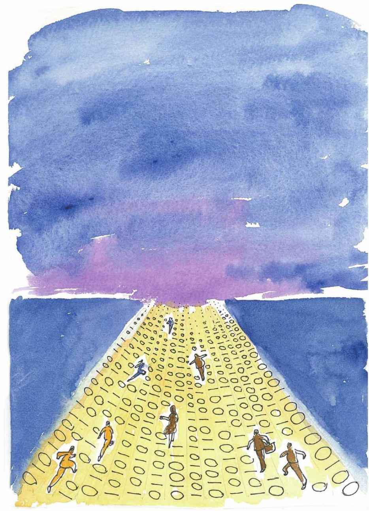

这天，小文和妈妈在操场上散步的话题是她们最近一起看的英剧《神探夏洛克》。
小文是剧中福尔摩斯扮演者本尼迪克特的粉丝，散步时一遍一遍地絮叨着，“男主角太帅了”，“BC太帅了”。
BC是本尼迪克特的昵称，小文最近总是BC长BC短的。
妈妈心不在焉：“哦，是吗？要不考你一个逻辑推理题？”
“好啊！”
“给你线索1+1=2，1+2=3，请问你的推理结果是什么？”
“难道是3+1=4，或者2+3=5？”
“请注意，这是推理题，我的参考答案是1+1+1=3。”
“这个……”
“不仅是神探们要用推理，普通人也经常用推理。比如成语‘守株待兔’，那个捡兔子的人用到的其实是逻辑中的归纳推理。再比如，我连着三天很晚回家，运用归纳推理，到第四天你是不是会推想我仍然会回来很晚呢？”
“有可能。”
“其实推理是人类的本能，早在2000多年前，亚里士多德就提出：在整个自然界中，人类是最高级的，人类心智最主要的特征就是具有逻辑推理的能力。”
“能举个例子吗？”
“一个例子是这样的：
“大前提说的是：所有人都是要死的；
“小前提是：苏格拉底是人；
“结论是：苏格拉底也是要死的。
“这是亚里士多德创建的逻辑推理三段论中的一个著名例子。”
小文说：“现在计算机逻辑推理也超级厉害啊，前段时间的人机围棋大战，电脑程序‘阿法狗（Alpha GO）’不是下赢了李世石吗？”
“计算机程序是可以逻辑推理的，不过这个过程可是经过了很长时间啊。大概300多年前，德国大数学家莱布尼茨曾设想创造一种‘通用的科学语言’来完成自动推理，想让逻辑推理过程像数学计算一样，通过计算得出最终的结论。”
“这个想法在当时应该很超前。”
“莱布尼茨的想法是建立推理的一种通用运算，在当时社会条件的限制下，他的想法并没有实现。一直到100多年后，一个叫布尔（George Boole）的英国人才完成了这个工作。”
“布尔，这个名字怎么有点熟呢？”
“你们计算机课学的编程选修课，是不是有变量叫布尔变量呢？这是为了纪念布尔的工作而命名的。布尔出生贫寒，自学成才。他出版了一本书叫《思维的规律》，这本书并不厚，但足以奠定布尔的地位。”
“这本书讲什么？”
“布尔在这本书中创造了一套符号系统，也就是利用一些符号来表示逻辑推理中的各种概念。此外，布尔还给出了推理运算的一些基本规则。”
“就是说，布尔让推理真的可以运算起来了。”
“可以这么说，别看现在布尔的名气这么响亮，但在当时，人们对他提出的那套后来被称为‘布尔代数’的理论并不理解，直到又一个关键人物的出现，才发现了布尔代数的重大价值。”
“哦，这个人是谁呢？”
“香农（Claude Shannon）。”
“没听说过。”
“以后你会经常听到这个名字的。可以这样说，以莱布尼茨为首的一些人提出了自动推理的想法，布尔根据这个想法制定了一套只有0和1参与运算的运算规则。80多年后香农拾起布尔丢下的接力棒，把布尔的理论用在他的电路设计中。也许是命运的安排，几乎同时，图灵在一篇论文中画下了他心中的计算机的雏形——图灵机，若干类似这样的大事件综合起来，最终构建了我们现在每天赖以生存的网络世界。”
“拜托，你说的人名太多了，我一下子可记不住！”
“哦，好吧。不过，你至少应该知道，0和1是两个非常神奇的离散符号，构建出的数字大厦非常宏伟。”
“是够神奇的，都已经万物皆比特了。”
“哈哈，理解得不错嘛。算了，不管比特的事了，我们来跑个几圈如何？”
“行啊！”小文是跑步好手，“不过你的速度太慢了。”
“那就来个龟兔赛跑吧。”
两个人开始慢跑起来，夜幕下从远处看，操场上两个离散的点的距离越拉越大了。